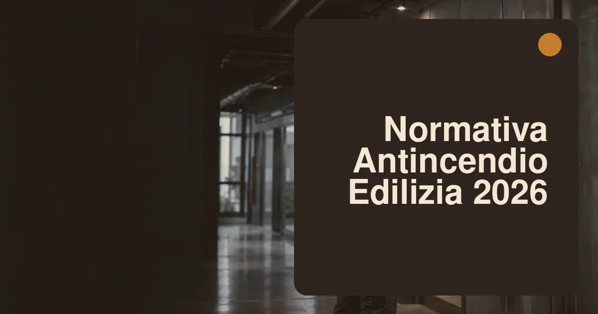

Come è organizzata la prevenzione incendi in Italia?
La prevenzione incendi italiana ha una struttura a piramide. Alla base ci sono le leggi generali sulla sicurezza delle costruzioni e sul lavoro; al centro il DPR 151/2011, che elenca le attività soggette ai controlli del Corpo Nazionale dei Vigili del Fuoco; al vertice operativo il Codice di prevenzione incendi (DM 3 agosto 2015 e successivi aggiornamenti) con le sue regole tecniche verticali (RTV), cioè i decreti specifici per le singole attività — dalle autorimesse agli edifici scolastici, dalle attività commerciali ai depositi. Attorno ruotano le norme tecniche UNI ed EN richiamate dai decreti, che traducono i requisiti in soluzioni progettuali verificabili.
Il punto chiave da capire è la doppia anima del sistema. Per un verso c'è la conformità orizzontale: il Codice definisce una metodologia di progettazione antincendio unica per tutte le opere — strategia di esodo, resistenza al fuoco delle strutture, controllo di fumi e calore, compartimentazione, impianti di rivelazione ed estinzione. Per l'altro c'è la conformità verticale: ogni attività soggetta ha la sua regola tecnica dedicata con requisiti specifici. Un edificio può dover rispettare entrambe, e il progettista antincendio deve dimostrare la conformità a tutti i livelli applicabili. Chi arriva dal mondo strutturale troverà una logica simile a quella delle Norme Tecniche per le Costruzioni: obiettivi prestazionali, metodi di verifica e soluzioni conformi.
A vigilare è il Corpo Nazionale dei Vigili del Fuoco attraverso i comandi provinciali, che esaminano i progetti, effettuano sopralluoghi e rilasciano — dove previsto — il Certificato di Prevenzione Incendi (CPI). Senza CPI, le attività soggette non possono legittimamente operare, e l'agenzia delle entrate, i comuni e le assicurazioni lo verificano con sempre maggiore frequenza.
Cos'è il Codice di prevenzione incendi?
Il Codice (DM 3 agosto 2015, aggiornato più volte e consolidato nella versione nota come «Codice 2020» e successive) ha introdotto in Italia la progettazione antincendio prestazionale: invece di prescrivere solo soluzioni rigide, definisce obiettivi di sicurezza — salvaguardia della vita, protezione dei beni, tutela dell'ambiente — e lascia al progettista la scelta delle strategie per raggiungerli. La progettazione si sviluppa attraverso le famose lettere: dalla R (reazione al fuoco dei materiali) alla S (strategia di esodo), fino alla V (vigilanza e controllo), con livelli di prestazione crescenti assegnati in funzione del profilo di rischio dell'opera.
Per la pratica di cantiere contano soprattutto tre capitoli. Il primo è la resistenza al fuoco delle strutture: la capacità R-RE-REI richiesta dipende dall'altezza antincendio dell'edificio e dal carico d'incendio; le verifiche possono essere tabellari (classi di resistenza) o analitiche. Il secondo è l'esodo: numero e larghezza delle uscite, lunghezze dei percorsi, scale protette o a prova di fumo, porte tagliafuoco e segnaletica. Il terzo è la compartimentazione: suddividere l'edificio in compartimenti stagni al fuoco per contenere l'incendio dove nasce, con attenzione maniacale agli attraversamenti impiantistici — il punto dove nei sopralluoghi reali si trovano più non conformità.
| Capitolo del Codice | Cosa regola | Tipico livello richiesto |
|---|---|---|
| G — Strategia antincendio | Obiettivi, scenari, metodi di progettazione | Obbligatorio per ogni opera |
| R — Reazione al fuoco | Classi dei materiali (A1, A2, B… F) | A2-s1,d0 o B-s2,d0 nelle vie di esodo |
| S — Esodo | Uscite, percorsi, scale, porte | In funzione dell'affollamento |
| C — Controllo dell'incendio | Compartimenti, elementi REI, attraversamenti | REI 60-120 secondo l'attività |
| E — Estinzione | Idranti, estintori, sprinkler | Secondo RTV dell'attività |
Quali attività sono soggette ai controlli?
Il DPR 151/2011 elenca oltre 80 attività soggette ai controlli di prevenzione incendi, divise in tre categorie: A (bassa complessità, istruttoria semplificata), B (media, con valutazione del progetto) e C (elevata, con esame approfondito e sopralluogo obbligatorio). Nell'edilizia residenziale e terziaria le più frequenti sono: edifici di civile abitazione oltre i 24 metri di altezza antincendio, autorimesse oltre i 300 mq, attività commerciali oltre i 400 mq, alberghi oltre i 25 posti letto, scuole oltre le 100 persone presenti, uffici oltre i 1.000 occupanti, ospedali e RSA, centrali termiche oltre certe potenze, depositi di materiali infiammabili.
Il punto critico per chi ristruttura è che l'intervento edilizio può far scattare la soglia: sopraelevare un condominio oltre i 24 metri, trasformare un negozio ampliandolo oltre i 400 mq, ricavare un albergo da un palazzo d'epoca sono tutte operazioni che portano l'immobile dentro la prevenzione incendi, con obbligo di progetto firmato da un professionista antincendio e di adeguamenti che spesso il committente non aveva messo a budget — scale di sicurezza, porte REI, impianti di rivelazione. Verificare la soglia prima del progetto definitivo è la mossa che evita le sorprese più costose. Anche le gare pubbliche richiedono attenzione crescente su questo fronte, come ricordiamo nell'analisi del nuovo Codice degli Appalti.
Come funziona la SCIA antincendio?
La SCIA antincendio è il titolo abilitativo per avviare, modificare o ampliare un'attività soggetta. Si presenta al comando provinciale dei Vigili del Fuoco prima dell'inizio dell'attività — in genere contestualmente alla pratica edilizia o al subentro — con modalità diverse per categoria: per le categoria A basta la documentazione semplificata e l'attività può partire subito; per le B e C serve il progetto antincendio completo, che i VVF valutano entro termini di legge (60-90 giorni), con possibile sopralluogo. Il collaudo finale, con verifica dei lavori e delle certificazioni dei materiali, chiude l'iter e porta al CPI per le attività che lo prevedono.
Gli adempimenti non finiscono con l'avvio. Molte attività richiedono il rinnovo periodico quinquennale della segnalazione, l'aggiornamento della documentazione a ogni modifica sostanziale (cambi di destinazione d'uso, ampliamenti, variazioni di layout) e la manutenzione programmata degli impianti — estintori, idranti, rivelazione, porte tagliafuoco — con registri tenuti aggiornati e personale formato. La dimenticanza più comune è proprio il rinnovo: una SCIA scaduta espone a sanzioni e, in caso di incidente, a profili di responsabilità molto pesanti. Le procedure si presentano oggi in via telematica attraverso il portale dei Vigili del Fuoco, con protocollo che fa fede sulle date.
Quali obblighi antincendio in cantiere?
Il cantiere edile è un'attività a rischio incendio specifico: lavorazioni a caldo (saldature, taglio, fiamme per guaine), depositi temporanei di solventi e gas, impianti elettrici provvisori, materiali combustibili accatastati. Gli obblighi nascono dall'incrocio tra prevenzione incendi e Testo Unico sulla sicurezza (D.Lgs 81/08): il piano di sicurezza deve prevedere presidi antincendio adeguati alla fase di lavoro — estintori carrellati nei punti critici, idranti o manichette nei cantieri di una certa dimensione, cassette DN45 negli edifici in sopraelevazione — vie di esodo mantenute libere e segnalate, procedure per le lavorazioni a caldo con «permesso di lavoro» e sorveglianza post-lavoro.
Tre dettagli operativi che i sopralluoghi sanzionano più spesso: gli estintori devono essere carichi, revisionati e accessibili — non coperti da bancali; i bombole e solventi vanno stoccati in aree ventilate, lontano da fonti di calore e con quantitativi minimi in quota; i ponteggi devono mantenere libere le vie di fuga dell'edificio occupato e rispettare le distanze dalle fonti di innesco, come dettagliamo nella guida a ponteggi, norme e sicurezza. Per il quadro completo degli obblighi di sicurezza, compresi coordinatori e documenti di cantiere, il riferimento è la nostra analisi delle novità del D.Lgs 81/08.
- Prima dell'avvio: valutazione del rischio incendio di cantiere nel PSC/POS, presidi proporzionati alle lavorazioni previste.
- Durante i lavori: permessi per lavorazioni a caldo, controllo quotidiano di vie di fuga e presidi, formazione degli addetti all'uso degli estintori.
- A fine giornata: sorveglianza di almeno 30-60 minuti dopo le lavorazioni a caldo, messa in sicurezza di bombole e infiammabili.
Chi risponde di cosa?
La catena delle responsabilità antincendio è lunga e personale. Il progettista antincendio — professionista iscritto negli appositi elenchi del Ministero dell'Interno — firma la conformità del progetto e risponde degli errori di strategia; il direttore dei lavori vigila sull'esecuzione conforme, incluse le certificazioni dei materiali installati (porte REI, vernici intumescenti, canaline); l'impresa esecutrice risponde della qualità della posa e delle certificazioni di conformità degli impianti; il datore di lavoro/gestore dell'attività risponde della manutenzione, della formazione e del piano di emergenza per tutta la vita dell'edificio. In caso di incendio con vittime, la catena viene ricostruita anello per anello: chi non può dimostrare di aver fatto la propria parte rischia sul piano penale.
La difesa migliore è la documentazione: certificati di collaudo, dichiarazioni di conformità degli impianti, certificati dei materiali (reazione e resistenza al fuoco), registri di manutenzione, verbali delle prove di evacuazione. La regola professionale è semplice: ciò che non è documentato, in sede giudiziaria, non esiste. Nei condomini, l'amministratore ha l'obbligo di curare manutenzione e adempimenti delle parti comuni — dalle porte tagliafuoco dei vani scala agli estintori — e i verbali di assemblea che respingono le spese di adeguamento non lo sollevano dalla responsabilità.
Quali errori si pagano più cari?
Dall'esperienza dei sopralluoghi e dei contenziosi, gli errori più costosi sono quasi sempre gli stessi. Il primo è scoprire la soglia a lavori avanzati: l'adeguamento antincendio deciso a cantiere aperto costa il doppio e blocca l'agibilità. Il secondo è trattare le RTV come suggerimenti: le regole tecniche verticali sono decreti, non linee guida, e la deroga va motivata con l'ingegneria antincendio (FSE), non con l'abitudine. Il terzo è la compartimentazione tradita dagli impianti: ogni attraversamento di muro REI da parte di canalizzazioni va sigillato con sistemi certificati EI, non con schiuma qualsiasi. Il quarto è la manutenzione di facciata: estintori scaduti, porte tagliafuoco bloccate aperte da cunei, rivelatori coperti da controsoffitti nuovi. Il quinto è non aggiornare la SCIA dopo modifiche di layout o destinazione: per i VVF conta lo stato reale dei luoghi, non quello del progetto di dieci anni fa.
La sintesi operativa per imprese e tecnici: verificare la soglia nel preliminare di commessa, coinvolgere il progettista antincendio dal definitivo, presidiare la compartimentazione durante gli impianti, consegnare al committente un dossier documentale completo a fine lavori. Quattro passaggi che costano poco e mettono al riparo da sanzioni, fermi cantiere e responsabilità che nessun margine di commessa può compensare.
Domande frequenti
Quando serve il progetto antincendio per un edificio residenziale?
Quando l'altezza antincendio supera i 24 metri, o se nell'edificio si insediano attività soggette come autorimesse oltre 300 mq o centrali termiche sopra soglia.
Chi può firmare un progetto antincendio?
I professionisti iscritti negli elenchi del Ministero dell'Interno — architetti, ingegneri, geometri, periti — nei limiti dimensionali previsti per ciascuno.
La SCIA antincendio scade?
Sì: per molte attività va rinnovata ogni 5 anni e aggiornata a ogni modifica sostanziale. La SCIA scaduta espone a sanzioni.
In un condominio anni '70 senza CPI si può ristrutturare?
Sì, ma oltre i 24 metri l'intervento deve verificare l'adeguamento delle parti comuni: vani scala, porte tagliafuoco, impianti. Serve verifica preliminare.
Le porte tagliafuoco condominiali si possono tenere aperte?
Solo con elettromagneti omologati collegati alla rivelazione incendi. Il cuneo che blocca la porta vanifica la compartimentazione ed è sanzionabile.
Fonti: DPR 151/2011 (regolamento di semplificazione della disciplina dei procedimenti di prevenzione incendi); DM 3 agosto 2015 e aggiornamenti (Codice di prevenzione incendi); regole tecniche verticali del Ministero dell'Interno; D.Lgs 81/08 e s.m.i.; portale e guide operative del Corpo Nazionale dei Vigili del Fuoco. Quadro aggiornato a luglio 2026: verificare sempre le RTV applicabili alla specifica attività.